Base
.gif)
โกคูร่างเบส (Base Form) คือร่างดั้งเดิมของซุนโกคูในดราก้อนบอล มีจุดเด่นที่ผมตั้งสีดำชี้ขึ้นและชุดฝึกสีส้ม แม้จะเป็นร่างไร้การแปลงร่าง แต่ด้วยการฝึกฝนขั้นสุดยอด พลังพื้นฐานของเขากลับมหาศาลจนสามารถต่อสู้กับศัตรูระดับจักรวาลได้
.gif)


ซน โกคู ชื่อโดยกำเนิด คาคาร็อต เป็นชาวไซย่าที่เติบโตบนโลก เป็นตัวเอกหลักของซีรีส์ดราก้อนบอล เขาเป็นบุตรชายคนที่สองและบุตรคนสุดท้องของบาร์ด็อกและจิเน่ เป็นสามีของจิ-จิ และเป็นพ่อของโกฮังและโกเท็น เดิมทีพ่อแม่ส่งคาคาโรต์มายังโลกตั้งแต่ยังเป็นทารก
โกคูร่างเบส (Base Form) คือร่างดั้งเดิมของซุนโกคูในดราก้อนบอล มีจุดเด่นที่ผมตั้งสีดำชี้ขึ้นและชุดฝึกสีส้ม แม้จะเป็นร่างไร้การแปลงร่าง แต่ด้วยการฝึกฝนขั้นสุดยอด พลังพื้นฐานของเขากลับมหาศาลจนสามารถต่อสู้กับศัตรูระดับจักรวาลได้
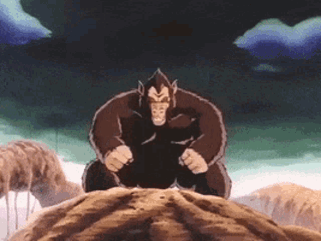
ลิงใหญ่ เป็นสิ่งมีชีวิตรูปร่างคล้ายลิงยักษ์ที่มีรูปร่างคล้ายมนุษย์ ซึ่งชาวไซย่าแห่งจักรวาลที่ 7 สามารถแปลงร่างเป็นได้ในคืนพระจันทร์เต็มดวง (หรือวัตถุที่คล้ายกัน) เพื่อเพิ่มความแข็งแกร่งอันน่าเกรงขามของพวกเขาให้มากขึ้นไปอีก
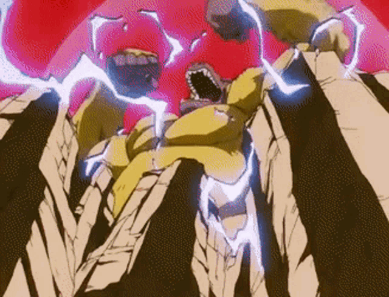
ลิงใหญ่ทองคำ (หรือที่รู้จักกันในชื่อ ลิงทองคำ) หรือบางครั้งเรียกว่าลิงยักษ์สุดยอดซูเปอร์ไซย่า เป็นอีกรูปแบบหนึ่งที่แข็งแกร่งกว่าซูเปอร์ไซย่ามาก การแปลงร่างนี้ปรากฏครั้งแรกในดราก้อนบอล Z เมื่อเบจิต้าเล่าเรื่องราวของซูเปอร์ไซย่าในตำนาน และปรากฏอีกครั้งในดราก้อนบอล GT เมื่อโกคูแปลงร่างเป็นซูเปอร์ไซย่าก่อนที่จะแปลงร่างเป็นซูเปอร์ไซย่า 4
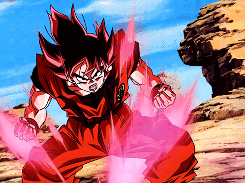
คโอเคน (Kaio-ken) หรือ "หมัดราชาแห่งโลก" เป็นเทคนิคที่คิดค้นโดยราชาไค มันจะเพิ่มพลังปราณของผู้ใช้ในชั่วพริบตา และเปลี่ยนออร่าให้เป็นสีแดงก่ำ ทำให้พลังและความเร็วเพิ่มขึ้นเพื่อเอาชนะศัตรูที่แข็งแกร่งกว่าได้ แต่ต้องแลกมาด้วยแรงกระแทกอย่างรุนแรง การควบคุมพลังปราณอย่างแข็งแกร่งเป็นสิ่งจำเป็นในการใช้ไคโอเคนอย่างถูกต้อง
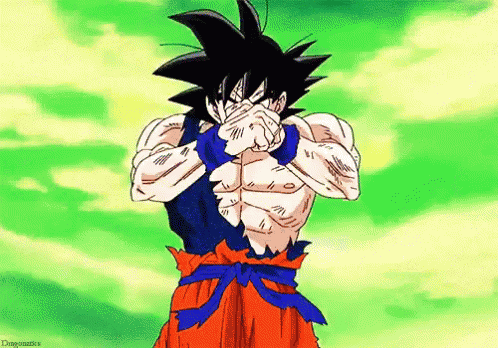
เป็นการแปลงร่างขั้นสูงที่ใช้โดยสมาชิกและลูกผสมของเผ่าไซย่าที่มีเซลล์เอสในปริมาณที่เพียงพอ ในซีรีส์ดราก้อนบอล มนุษย์โลกที่มีเชื้อสายไซย่าในดราก้อนบอลออนไลน์ก็สามารถแปลงร่างนี้ได้เช่นกัน โดยการขอพรให้พลังไซย่าที่ซ่อนอยู่ภายในถูกปลดล็อก
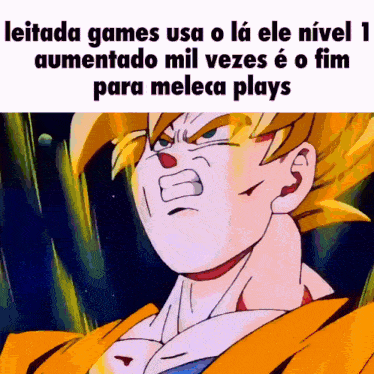
"หมัดสุดยอดของราชาแห่งโลก" หรือเรียกอีกอย่างว่าซูเปอร์ไซย่าไคโอเคน เป็นการผสมผสานระหว่างการแปลงร่างซูเปอร์ไซย่าหรือซูเปอร์ไซย่าขั้นที่สอง และเทคนิคไคโอเคน
.gif)
มีลักษณะและความสามารถที่คล้ายคลึงกับรูปแบบดั้งเดิมมาก อย่างไรก็ตาม พลังที่ส่งออกมานั้นมากกว่ามาก เนื่องจากความเร็ว ความแข็งแกร่ง และพลังงานที่ส่งออกมานั้นเพิ่มขึ้นอย่างมาก
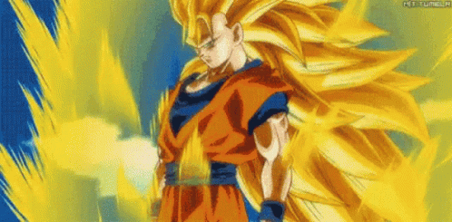
โกคู Super Saiyan 3 เป็นร่างที่พัฒนามาจากซูเปอร์ไซย่าขั้น 2 โดยการฝึกฝนอย่างหนัก มีจุดเด่นคือผมสีทองยาวสว่าง ไร้คิ้ว และออร่าไฟฟ้า ร่างนี้รีดพลังแฝงออกมาถึงขีดสุด ทำให้พลังโจมตีและพลังความเร็วเพิ่มขึ้นจากร่างปกติถึง 400 เท่า
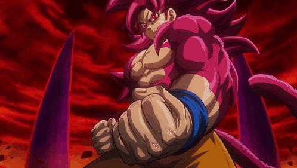
เป็นวิวัฒนาการของร่างซูเปอร์ไซย่าและร่างลิงยักษ์สีทอง ซึ่งปรากฏครั้งแรกในดราก้อนบอล GT โดยมีการปรับปรุงรูปแบบใหม่ในดราก้อนบอลไดมะ

ในรูปแบบนี้ ร่างกายของซูเปอร์ไซย่า 4 เต็มไปด้วยพลังคิ รูปลักษณ์จะแตกต่างกันเล็กน้อยในแต่ละผู้ใช้ แม้ว่าจะมีออร่าสีแดงเข้มที่คล้ายกับ Perfected Ultra Instinct ก็ตาม เมื่อออร่าหลักทำงาน ขนสีแดงปกติจะเปลี่ยนเป็นสีชมพู และผมจะกลายเป็นสีแดงสดที่มีเฉดสีเข้มขึ้น
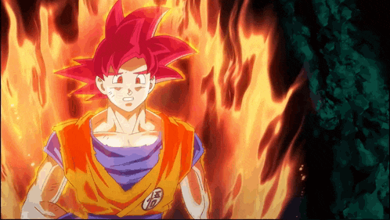
"ซูเปอร์ไซย่าก็อด" คือตำนานเหนือตำนานของเผ่าพันธุ์นักรบชาวไซย่า พลังของชาวไซย่าผู้มีจิตใจดีหกคนต้องถูกหลอมรวมกันเพื่อให้หนึ่งในนั้นบรรลุถึงร่างในตำนานนี้ เมื่ออยู่ในร่างนี้ การเปลี่ยนแปลงที่เห็นได้ชัดที่สุดคือสีผิวที่คล้ำขึ้นเล็กน้อยและผมที่เป็นสีแดง

โทริยามะกล่าวว่าเขาทำผมของโกคูให้เป็นสีฟ้าเพื่อแสดงให้เห็นว่า "การเอาชนะขีดจำกัดบางอย่างทำให้เขาทั้งแข็งแกร่งและสงบ สามารถรักษาความสงบในระหว่างการต่อสู้ได้" ส่วนเบจิต้าสวมชุดสีดำที่ถูกดัดแปลงโดยแผนกพัฒนาของบริษัทแคปซูลภายใต้คำแนะนำของบูลม่า
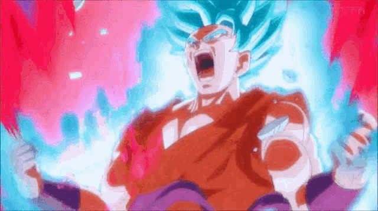
เป็นการประสานพลังสองส่วนเข้าด้วยกันระหว่างการแปลงร่างเทพของโกคูและวิชาไคโอเคน เน้นด้วยเอฟเฟกต์ออร่าสองชั้น คือออร่าไคโอเคนสีแดงเข้มอยู่ด้านนอกออร่าซูเปอร์ไซย่าบลูสีน้ำเงิน เมื่อใช้ครั้งแรกผมสีน้ำเงินจะสว่างขึ้นหลายเฉด และผิวดูเหมือนถูกส่องสว่างจนเป็นสีชมพูเข้ม ชุดกิสีส้มสดใสกลายเป็นสีแดงเข้ม

ยังไม่มีข้อมูลเพิ่มเติม
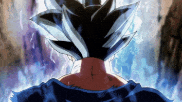
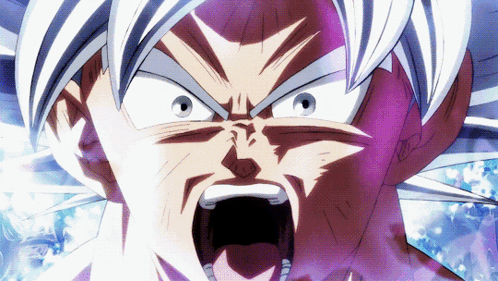
รูปแบบนี้โดยพื้นฐานแล้วเหมือนกับสถานะเริ่มต้นของ Ultra Instinct Sign ทุกประการ เพียงแต่ผมของผู้ใช้จะเปลี่ยนเป็นสีเงิน ทรงผมดูยุ่งเหยิงและแน่นหนากว่าปกติเล็กน้อย ไม่มีเส้นผมหลุดลุ่ย ดวงตาดูดุดันและคมชัดขึ้น มีม่านตาสีเงิน และมองเห็นรูม่านตาได้ชัดเจน ในมังงะ ผู้ใช้มักจะมีสีหน้ามุ่งมั่นแต่สงบ